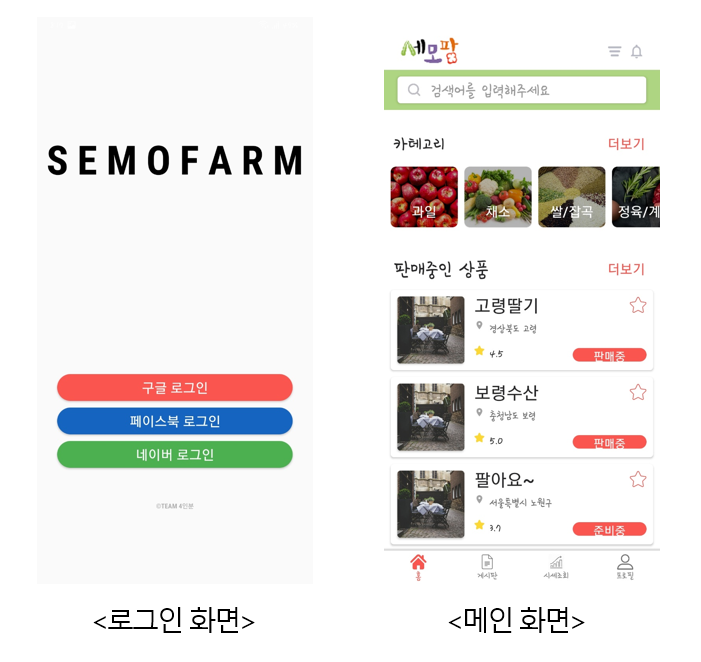
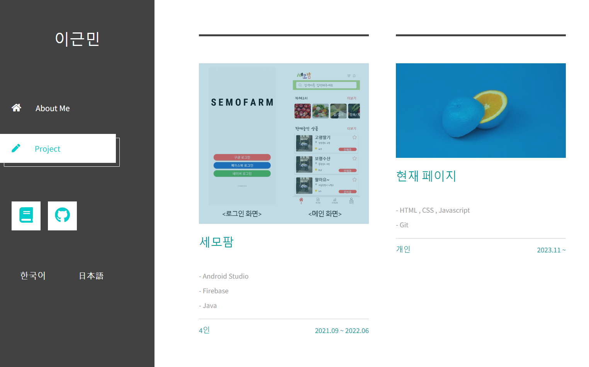

Featured
세모팜
농산물 거래를 위한 애플리케이션 프로젝트로, 프론트엔드 구현과 화면 흐름 구성에 참여했습니다.
Android Studio
Firebase
Java
4인 팀
프로젝트 상세 보기
Projects
팀 프로젝트 경험과 개인 웹 작업을 중심으로 정리했습니다. 현재는 핵심 프로젝트를 우선 배치하고, 이후 작업은 같은 구조로 계속 추가할 수 있게 구성했습니다.

Featured
농산물 거래를 위한 애플리케이션 프로젝트로, 프론트엔드 구현과 화면 흐름 구성에 참여했습니다.

Personal
HTML, CSS, JavaScript 기반으로 만든 개인 포트폴리오 웹페이지입니다.
Next
새 프로젝트가 추가되면 같은 형식으로 정리해 이 섹션에 이어서 확장할 수 있습니다.
Next
프로젝트 설명, 기술 스택, 기간, 역할을 구조화해 추가할 수 있도록 자리만 먼저 확보했습니다.